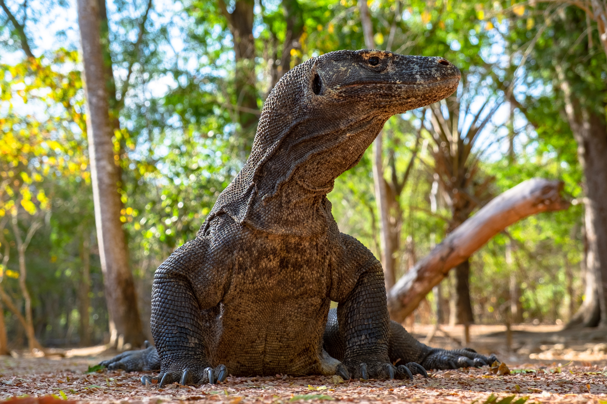
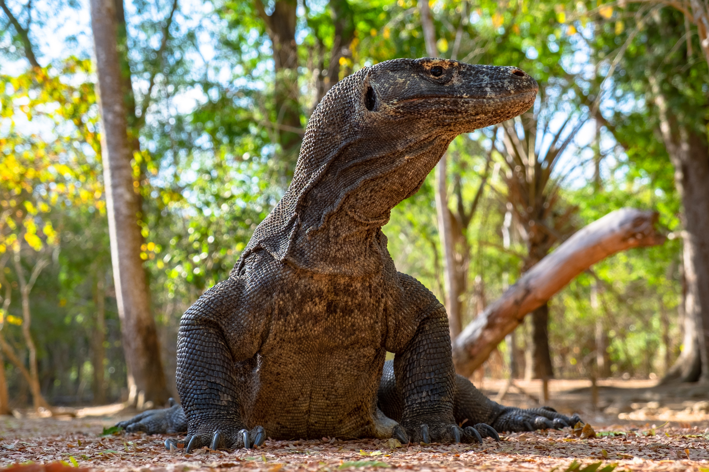

Activity 1: Meeting the Komodo Dragons in Komodo National Park!
 


Komodo National Park is located between the islands of Sumbawa and Flores
in the East Nusatenggara province. The Komodo National Park encompasses a total of 29 volcanic islands - which include the three major islands of Rinca, Padar, and Komodo.
Komodo National Park currently houses approximately 2,500 Komodo Dragons and is the only place in the world where you can find them!
Please note, these animals are considered wild and free. Visitors are urged to keep their distance and exercise EXTREME caution. You must hire an experienced ranger to visit!
However, if you would prefer not to meet these creatures, that is ok!
The park's terrain is uniquely diverse, consisting of mountainous hillsides, tropical rainforests, a grassland-woodland savannah, and white sandy beaches that harbor rich marine biodiversity!
Planning your future trip with the travel agency, Go To Komodo, will allow you to experience the park to the fullest!
- Sources: indonesia.travel, theculturetrip.com
- Komodo Dragon -
- A heavily built monitor lizard that captures large prey such as pigs by ambush. Occurring only on Komodo and neighboring Indonesian islands, it is the largest living lizard.